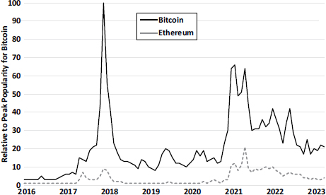
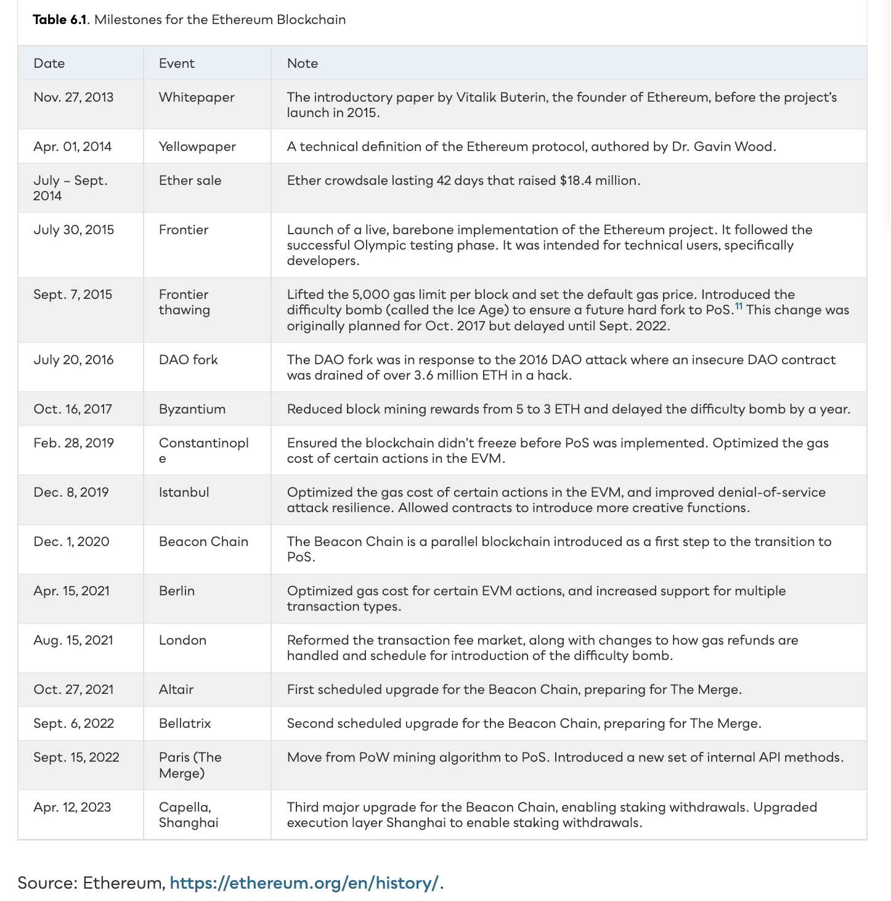
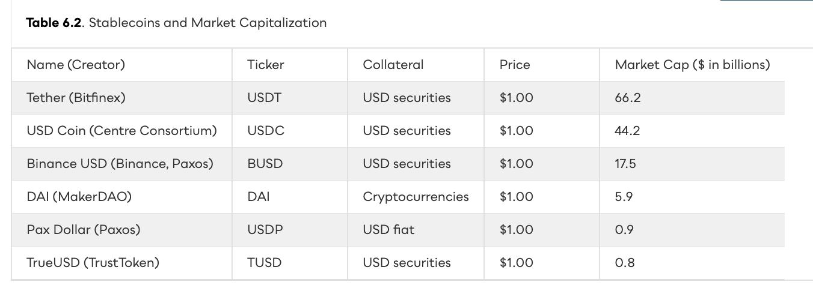
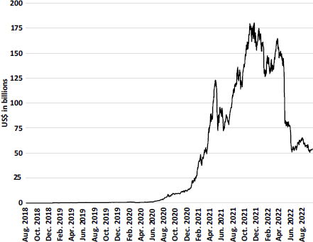
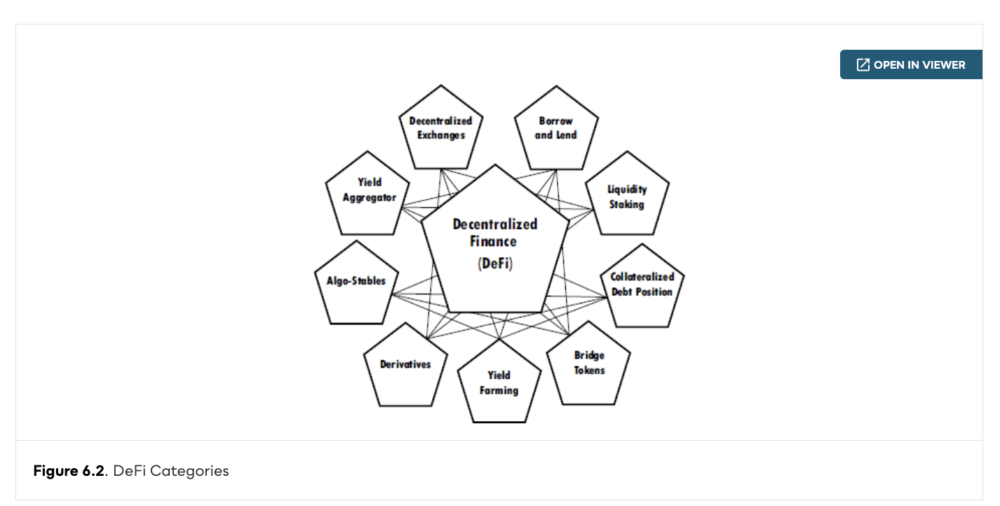
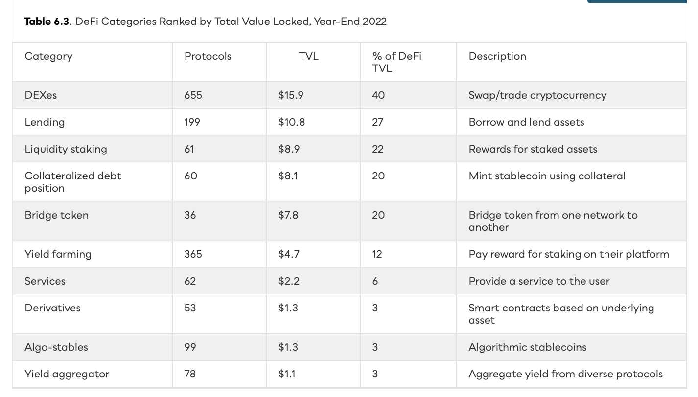
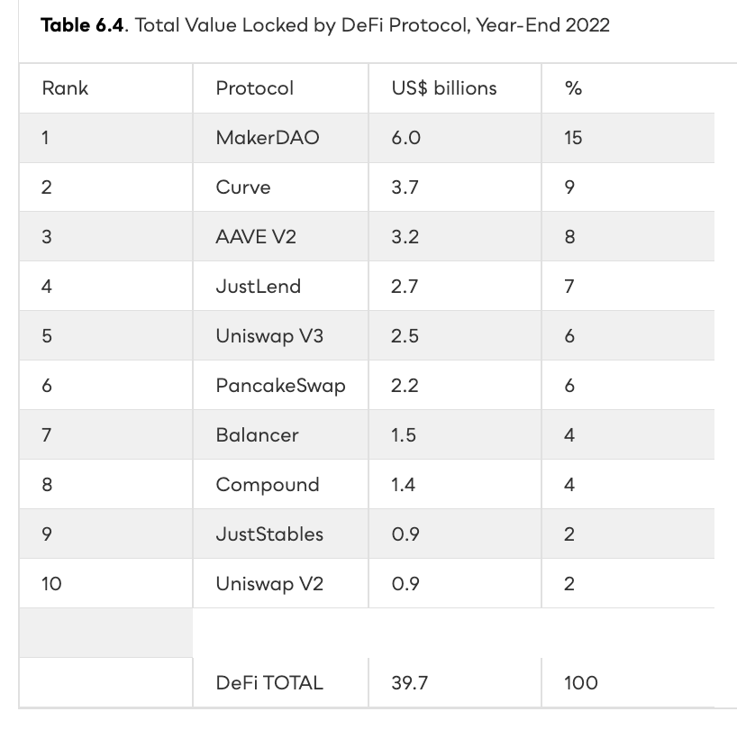

The Russian-Canadian programmer wrote Bitcoin Magazine at 17, dropped out of Waterloo on a Thiel fellowship at 20, and posted the Ethereum whitepaper in November 2013. Bitcoin was too narrow — Ethereum would be general-purpose.


Ether (ETH) is the native token of Ethereum. Users buy “gas” to pay for computation. More complex programs = more gas. Incentivizes efficient code and prevents network spam. Hashing algorithm Ethash; new block every 12–15 sec.
Bitcoin tracks UTXOs; Ethereum tracks accounts in a global world state. There are two account types: externally owned accounts (controlled by a private key) and contract accounts (controlled by their own code). The world state is the Merkle root of a state trie that every full node maintains in lockstep.
codeHash = keccak256(""). A contract’s code is immutable after deployment, but its storage mutates on every transaction.stateRoot, txRoot, and receiptsRoot.Every Ethereum node runs the Ethereum Virtual Machine, a deterministic, sandboxed, 256-bit stack machine. Bytecode is executed one opcode at a time, with each opcode charged a fixed amount of gas. If gas runs out, all state changes revert — but the fee is still paid. EIP-1559 (Aug 2021) replaced the auction-style fee market with a predictable base fee + tip.
gasLimit (max work) and maxFeePerGas (max price). If execution exceeds gasLimit, EVM throws “out of gas” — state reverts, fee paid in full.
A smart contract is computer code that executes a transaction without human intervention. Written in Solidity, deployed to a contract address, immutable on-chain. Combine them → dapps. Combine dapps → DAOs. Like LEGO, the only limit is imagination.
An ERC-20 token is not a separate currency — it is a single smart contract on Ethereum that keeps a mapping(address => uint256) of balances and exposes six required functions. Wallets and DEXes can interact with any ERC-20 because they all share this interface. This standard is why composability is possible.
CREATE opcode deploys it to a new address. Deployment costs ~1M gas (one-time). Every transfer() after that costs ~50K gas.
A DAO codifies governance — no management team, no paper documents. Slock.It’s “The DAO” raised $150M (12M ETH, 15% of supply) by May 2016. Then hackers exploited the smart contract code and drained $40M. The crypto community had to decide: is the blockchain truly immutable?
Time is divided into 12-second slots and 32-slot epochs. One validator proposes per slot; a committee attests. A block is finalised when two consecutive epochs are justified by ~2/3 of staked ETH. Protocol: Gasper (LMD-GHOST fork choice + Casper FFG finality).
0x0000...00219. Enter activation queue.BTC daily volatility ~4% breaks money’s functions. Stablecoins solve this by pegging to fiat, commodities, crypto baskets, or algorithms. The first appeared in 2014; today the largest, Tether, has a $66B market cap.

Decentralized finance is a marketplace and infrastructure that replicates banking, brokerage, asset management, and insurance using smart contracts on a blockchain. No intermediaries. Always open. Permissionless. The metric: Total Value Locked.

Each category is built from smart contracts. DEXes swap tokens (40% of TVL). Lending lets you borrow against crypto. Liquidity staking pools rewards for staked assets. Yield farming chases the highest APY across protocols.


A decentralized exchange (DEX) replaces order books with a liquidity pool managed by an automated market maker. Curve specialized in low-slippage stablecoin swaps. Peak TVL: $25B (year-end 2021). Year-end 2022: $3.6B.
MakerDAO is the largest DeFi protocol — $6B TVL at year-end 2022. Deposit ETH or ERC-20 tokens, mint DAI (a $1-pegged stablecoin) against them. Stay above the 200% collateralization ratio or face liquidation.

Liquidity staking, derivatives, and bridges expand DeFi’s scope beyond simple swaps and loans — toward a full-stack alternative financial system.
Tokenomics studies how token-based capital raising differs from traditional equity financing — and when tokens may be the better vehicle. The research builds theoretical foundations for a token-based economy.
David Rutter (ex-ICAP CEO) saw blockchain’s potential for back-office settlement — without the hype. R3’s permissioned DLT validates transactions individually with trusted notaries. No mining. No tokens. Just lower costs for the banks who funded it.
Ethereum gave us a general-purpose blockchain. Smart contracts let strangers transact without intermediaries. DAOs codify governance. Stablecoins peg crypto to $1 (until TerraUSD didn’t). DeFi locked $175B at the peak — lending, swapping, staking, and minting all without a bank. The Merge cut energy 99.95%. R3 Corda shows the permissioned alternative for regulated finance. Composability is the superpower — and the systemic risk.